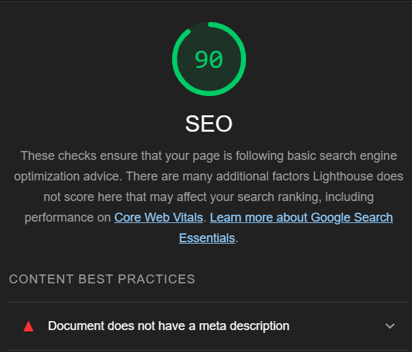
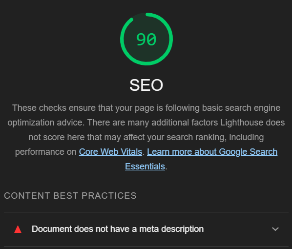
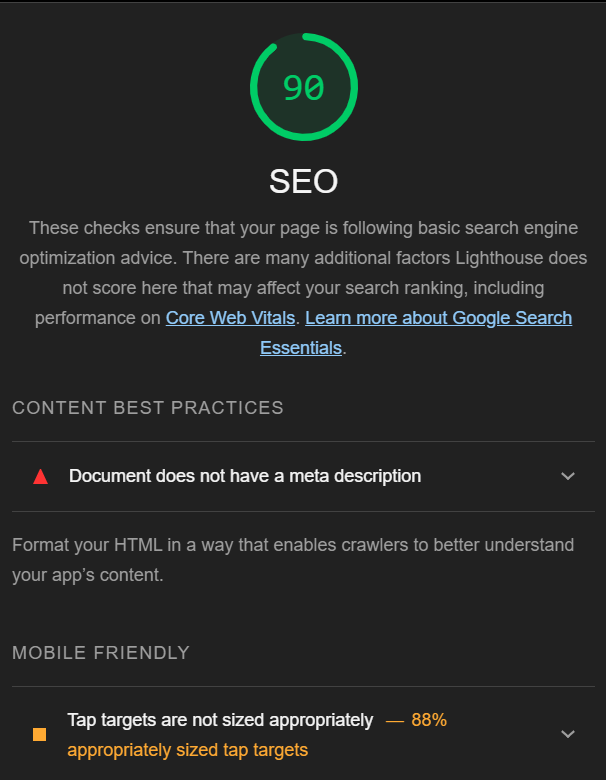
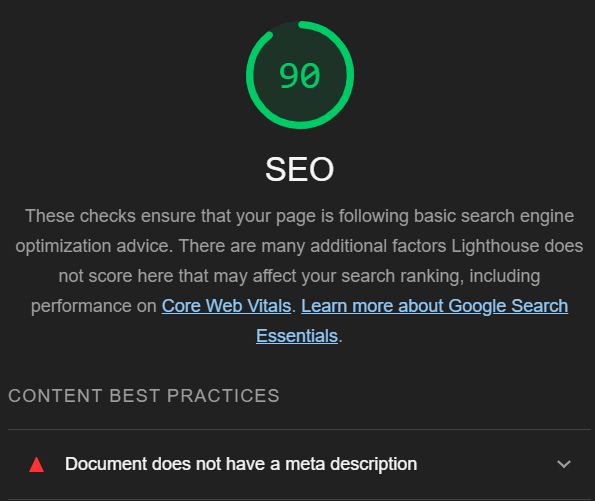
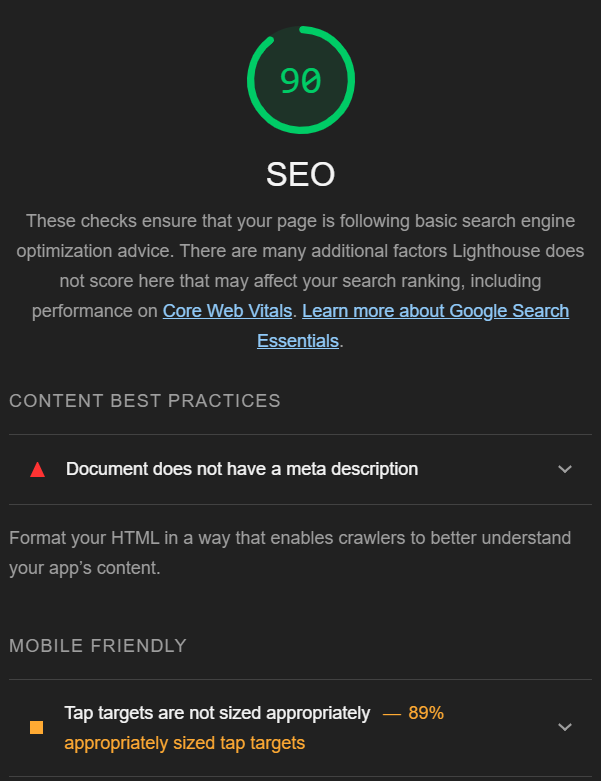
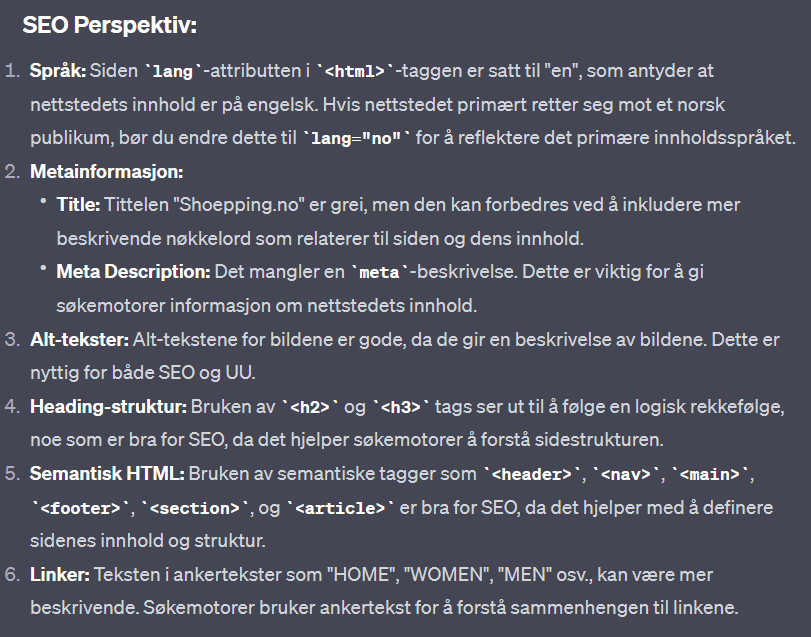
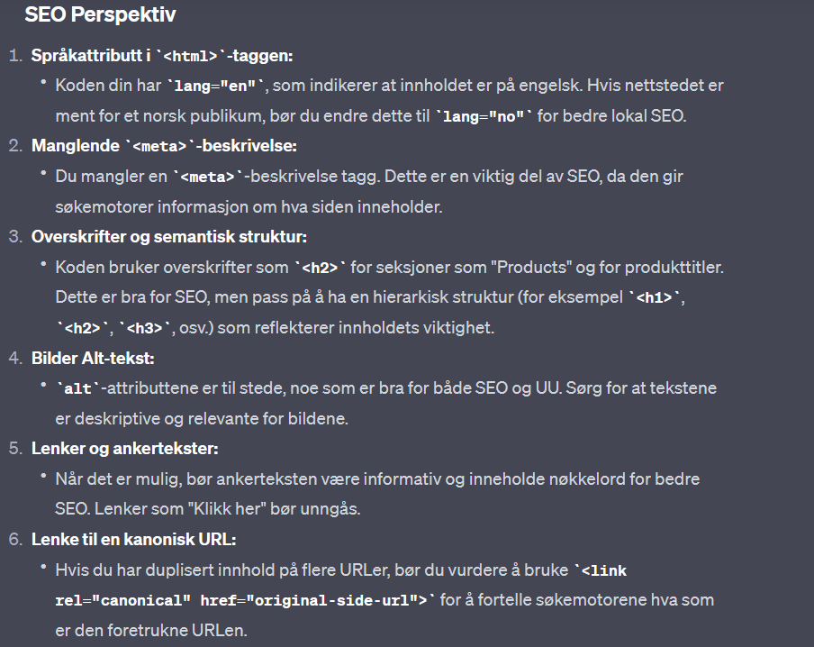
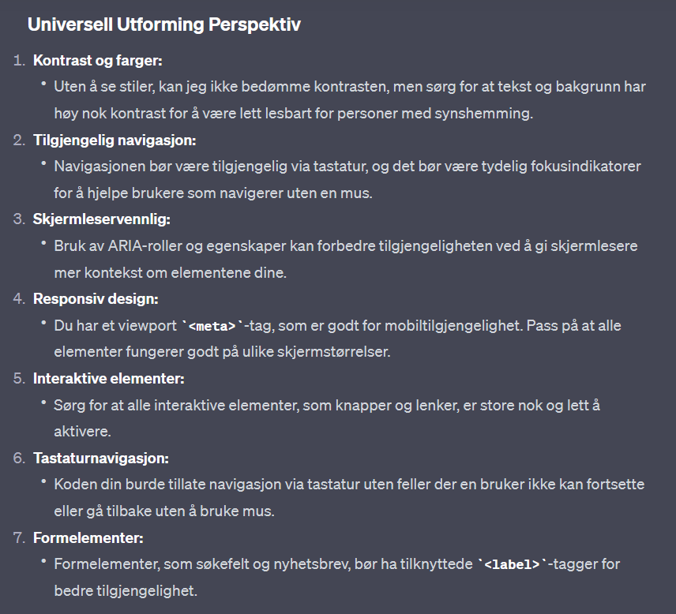
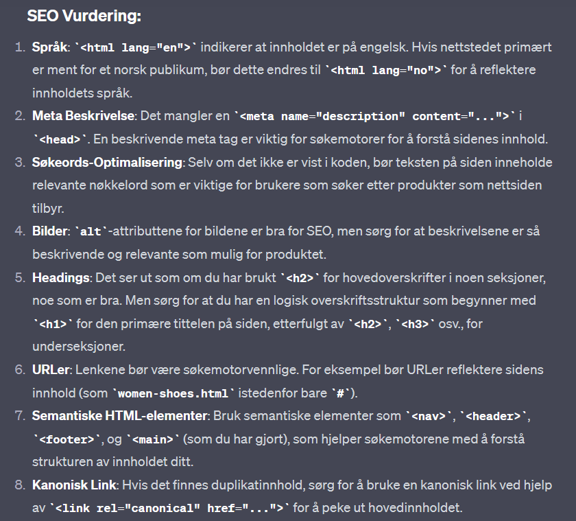
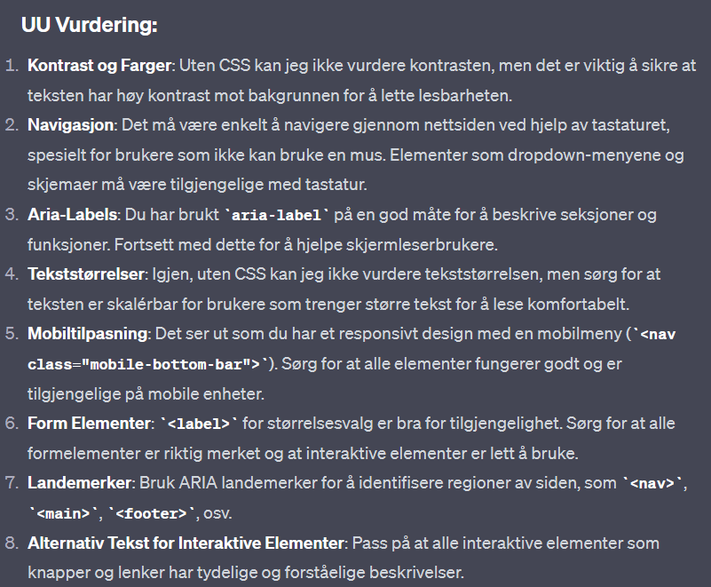

Nettstedsanalyse og Forbedringer
Nøkkelordundersøkelse
Listen nedenfor viser nøkkelord identifisert gjennom Google Trends som er relevante for vår nettside. Disse nøkkelordene er valgt for deres popularitet og relevans til våre produkter.
-
Sneakers
På Google Trends sammenlignet jeg "sneakers" og "joggesko" og merket at "sneakers" er et mer populært søkeord for brukere og for daglig bruk.

-
Shoes
Nøkkelordet "Shoes" er en omfattende term som dekker hele spekteret av fottøy. Det strekker seg over alt fra hverdagssko til spesialiserte sportsmodeller, noe som gjør det ekstremt verdifullt for å tiltrekke seg en bred kundebase. En sterk synlighet for dette søkeordet sikrer at vi når ut til kunder med et mangfold av behov og stilpreferanser, og holder oss konkurransedyktige i et marked med høy søkefrekvens.
-
Boots
Sammenlignet med "støvler", "boots" er et hyppigere søkt alternativ og er særlig populært i kaldere sesonger for de som søker etter robuste sko.

-
Sport
Essensielle for de som deltar i fysiske aktiviteter, trening eller idretter. Mange kunder søker spesifikt etter sko designet for bestemte sportsgrener som fotball, løping, basketball, etc.

SEO Analyse
Forsiden Analyse
Lighthouse-analysen viser at både desktop- og mobilversjonen oppnår en SEO-poengsum på 90 av 100. Dette er et imponerende resultat, men analysen har også identifisert et forbedringspunkt: begge versjonene mangler en meta-beskrivelse. En velutformet meta-beskrivelse er viktig for søkemotoroptimalisering, og legge til dette kan ytterligere styrke sidens SEO-status.
Forside - Mobile
Produktside Analyse
Ved gjennomgang av nettstedet ble det oppnådd en SEO-score på 90/100 for både desktop- og mobilversjonene. Det ble påpekt at nettstedet mangler en meta-beskrivelse for begge versjonene. Mobilanalysen viser også at interaktive elementer som knapper og lenker ikke er optimalisert for tap; de bør ha en minimumsstørrelse på 48x48 piksler, eller tilstrekkelig med plass rundt seg, for å sikre en god brukeropplevelse og unngå overlapping med andre elementer. Å rette opp disse svakhetene vil ikke bare potensielt forbedre SEO-scoren ytterligere, men også brukervennligheten på tvers av enheter.
Produktside - Desktop
Produktside - Mobile
Produktdetaljside - Desktop
Desktop versjonen scorer 90 i SEO samme med mobil versjonen. Mobile versjonen får også en versjon om at tap targets are not sized properly - noe den scorer 89% på.
Produktdetaljside - Mobile
Universell Utforming (UU) Analyse
Forside Analyse
Skjermbildet viser en tilgjengelighetsrapport for en nettside som indikerer 8 feil og 6 advarsler. Feilene inkluderer 2 manglende skjemaetiketter og 6 tomme lenker. Advarslene omfatter 1 mistenkelig alternativ tekst, 1 manglende hovedoverskrift, og 4 redundante lenker. Ingen kontrastfeil er funnet, og det er 5 positive funksjoner samt 21 strukturelle elementer og ingen ARIA problemer rapportert.
Produktside Analyse
Rapporten viser en tilgjengelighetsanalyse for en produktside med 9 feil, inkludert 2 tilfeller av manglende skjemaetiketter og 7 tomme lenker. Det er også 2 advarsler notert: 1 for en manglende førstenivåsoverskrift og 1 for en redundant lenke. Det er ingen kontrastfeil, og 8 funksjoner er oppført som positive. Det er identifisert 21 strukturelle elementer og ingen ARIA-feil på siden.
Produktdetaljside Analyse
Rapporten fremhever en tilgjengelighetsvurdering for en produktdetaljside. Analysen identifiserer 9 feil, bestående av 2 manglende skjemaetiketter og 7 tomme lenker. Det er 2 advarsler, hvorav én for manglende førstenivåsoverskrift og én for en redundant lenke. Siden har 7 positive trekk og inneholder 14 strukturelle elementer samt 4 ARIA-roller. Det er ingen kontrastfeil rapportert.
ChatGPT Analyse : SEO og UU
SEO Resultater : Forside Analyse
I SEO-analysen påpekes det først at språkattributtet på siden indikerer engelsk (lang="en"), men siden er ment for et norsk publikum, derfor foreslås det å endre attributtet til norsk (lang="no") for å gjenspeile innholdets språk. Det nevnes at meta-beskrivelser og nøkkelord mangler, og at titteltaggen bør inneholde viktig nøkkelord og spesifikk informasjon for å forbedre relevansen. Videre anbefales det å strukturere overskrifter på en semantisk måte for brukervennlighet og søkemotoroptimalisering, samt å sørge for at bildetekster er beskrivende og at ankerlenker (linker) er informative og relevante. Responsiv design er også nevnt, spesielt viktigheten av en viewport meta-tag for mobilvennlighet. Til slutt er det en oppfordring til å inkludere Open Graph og Twitter-kort metatagger for å optimalisere hvordan innholdet deles på sosiale medier.
UU Resultater : Forside Analyse
Fra perspektivet av universell utforming, blir det kommentert at siden mangler CSS som er nødvendig for å vurdere kontrast og fargevalg, noe som er viktig for å møte tilgjengelighetsstandarder. Nettstedets navigasjon virker klar og strukturert, men det bør sikres at interaktive elementer er tilstrekkelig store og enkle å navigere med tastatur. Det er også foreslått å vurdere ARIA-roller og -attributter for å forbedre forståelsen av siden for skjermleserbrukere, og å inkludere form elementer med riktig 'label' for bedre tilgjengelighet. Mobiltilgjengeligheten bør testes, tekstinnholdet bør være enkelt og forståelig, og det må sikres at hele nettstedet kan navigeres med tastatur alene.
SEO Resultater : Produktside Analyse
SEO-analysen påpeker at nettsiden har flere områder som kan forbedres. Språkinnstillingen i 'html'-taggen er satt til engelsk ('en'), men siden er på norsk, derfor bør 'lang'-attributtet oppdateres til norsk ('no'). Det er også en mangel på 'description' og 'keywords' metatagger i 'head'-seksjonen, som er essensielt for at søkemotorer skal forstå og indeksere nettstedets innhold korrekt. Bildene har 'alt'-attributter, noe som er positivt for SEO, men tekstene i disse attributtene bør være mer beskrivende. Tekstknapper som "Load more" bidrar til indekserbarhet, men må være tekstlig beskrivende. Nettsiden bør sikre at URL-er til produktdetaljer og interne sider er SEO-vennlige, noe som innebærer at de skal være korte og beskrivende. Det er også viktig å bruke overskriftstagger ('h2', 'h3', etc.) for å strukturere innholdet logisk og gjøre det forståelig. Mobilvennlighet er ivaretatt gjennom viewport-meta-elementet, og nettsiden har en mobilvennlig navigasjon. For lenker er det essensielt å sikre at de er funksjonelle og ikke leder til "404 not found" sider. Lastetid kan påvirkes av hvordan siden laster CSS-ressurser og skript, noe som også er viktig for SEO. Til slutt, sosiale medier-ikoner er til stede, men 'href'-attributtene kan mangle korrekte lenker til de faktiske sosiale mediene
UU Resultater : Produktside Analyse
I UU-analysen bemerkes det at kontrast og farger ikke kan vurderes uten CSS, men det er essensielt at teksten har tilstrekkelig kontrast mot bakgrunnen. En klar og konsistent navigasjonsmeny, gjerne med bruk av 'nav'-elementet, er viktig for brukervennlighet. "Load more"-knappen bør gi tydelig feedback. For skjermlesere, er det viktig med bruk av semantiske HTML5-tagger som 'header', 'main', 'footer', og 'nav'. Elementer som stjernerangeringer bør ha tekstlige beskrivelser tilgjengelig via 'aria-label'. Skjemaer, spesielt for nyhetsbrevabonnement, må ha tydelige 'label'- eller 'aria-label'-attributter for tilgjengelighet. Til slutt er det viktig at HTML-koden validerer mot W3C-standardene for å sikre at nettstedet er så kompatibelt og tilgjengelig som mulig.
SEO Resultater : Produktdetalj Analyse
I SEO-delen for produktdetalj siden er det anbefalt å endre språkinnstillingen i html-taggen fra engelsk til norsk for å matche nettstedets innholdsspråk. En meta-beskrivelse bør også legges til for å forbedre nettstedets søkemotoroptimalisering, sammen med mer beskrivende alt-attributter for bilder for å styrke både SEO og tilgjengelighet. Nettstedets tittel kunne vært forbedret med flere beskrivende nøkkelord. Bruken av overskrifter fra h1 til h6 bør være mer strukturert for å skape en klarere innholdsstruktur, og lenker som kun inneholder ikoner bør suppleres med tekst som gir informasjon om lenkens formål til søkemotorer.
UU Resultater : Produktdetalj Analyse
Når det gjelder universell utforming (UU), er bruken av aria-label for å beskrive seksjoner et positivt skritt, men det påpekes at disse etikettene bør være mer informative. Det mangler synlige fokusindikatorer for interaktive elementer, noe som er viktig for tastaturbrukere. Skjemaer og nyhetsbrevinnmeldinger mangler korrekte label-elementer, noe som er essensielt for skjermleserbrukere. Tekstkontraster og størrelser bør også vurderes nøye for å sikre at de er lesbare for alle brukere, inkludert de med synshemming. Videre, tilgjengelige tekstbeskrivelser for knapper som "Legg til i handlekurv" eller "Legg til i favoritter" er ikke tilstede, men kan forbedres med aria-label. Responsiviteten på nettstedet skal også sikres for å støtte ulike skjermstørrelser og enheter.
SEO Resultater : Produktdetaljside Analyse
| Evaluering | ChatGPT Resultater | Lighthouse Resultater | WebAIM Resultater |
|---|---|---|---|
| SEO: Språk | Vurdere å bruke "lang" attributtet for norsk innhold | ||
| SEO: Meta Description | Mangel på meta description | Mangler meta description | |
| SEO: Nøkkelord og Titler | Inkludere viktige nøkkelord i tittelen for bedre SEO | ||
| SEO: Linker | Linker kan være mer beskrivende, unngå "klikk her" | Empty link, Redundant link | |
| SEO: Overskrifter | Passe på riktig bruk av |
Missing first level heading | |
| UU: Navigasjon | Nettstedet bør være navigerbart med tastatur | ||
| UU: Skjemaer | Skjemaelementer bør merkes korrekt med | Missing form label | |
| UU: Mobil Brukervennlighet | Mobil bunnmenyen bør være brukervennlig på små skjermer | Advarsel for størrelsen på elementer for touch | |
| UU: Interaktive Elementer | Knapper og lenker bør være store nok og enkle å aktivere | ||
| WebAIM: Alternative Tekster | Sus alternative text |
Ytelsesresultater
Dette avsnittet gir en oversikt over nettstedets ytelsesvurderinger gjennomført ved hjelp av Google Chrome's Lighthouse og WebAIM's tilgjengelighetstest.
Lighthouse Resultater
For å forbedre nettstedets SEO og universell utforming, ble følgende tiltak implementert:
- Meta beskrivelser ble forbedret for å gi en mer nøyaktig og tiltalende oppsummering av sidens innhold.
- Størrelse og avstand på navigasjonselementer ble justert for å forbedre brukeropplevelsen og navigasjonen på nettstedet.
Disse tiltakene førte til at nettstedet oppnådde en full score på Lighthouse's SEO evaluering, med en 100% poengsum på alle områder, inkludert ytelse, tilgjengelighet, beste praksiser og SEO.

WebAIM Tilgjengelighetsresultater
For å sikre at nettstedet er tilgjengelig for alle brukere, inkludert de med nedsatt funksjonsevne, ble WebAIM's tilgjengelighetstest utført. Resultatene viste følgende:
Detaljene og de spesifikke tiltakene som ble tatt for å oppnå disse resultatene, samt en oversikt over de oppnådde poengsummene, vil bli lagt til her etter at tilgjengelighetstestene er fullført.